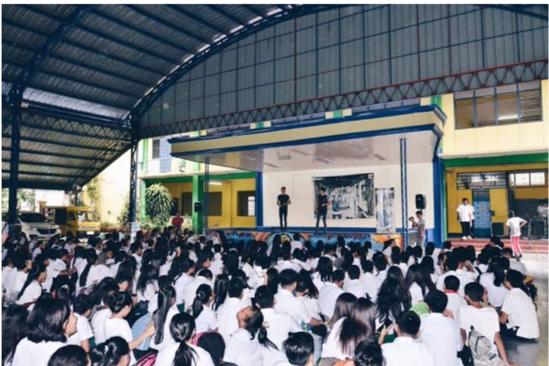

San Francisco High School (SFHS) is a public educational institution located in Bago Bantay, Quezon City. It was founded as the first annex of Quezon City High School on June 9, 1954, until it became an independent high school on Sept. 30, 1958. The school provides quality, fair, culture-based and complete basic education to produce graduates who are intellectually and technologically competent.
SFHS implements a K to 12 basic education curriculum that offers junior and senior high school. It is under the resolution ordered by the Department of Education (DepEd). It has ABM strand and STEM strand under the Academic track as well as Technical Vocational Livelihood (TVL) track which equips the students with technical skills for its senior high school program.
Requirements
Original Report Card (Form 138)
Permanent Record (Form 137)
Certificate of Good Moral
Photocopy of Certificate of Completion
2 pcs. 1x1 Colored Id picture
Photocopy of PSA Birth Certificate
Long Brown Envelope
Senior High School
Academic Track
Accountancy, Business, and Management Strand (ABM)
Science, Technology, Engineering, and Mathematics Strand (STEM)
Technical Vocational Livelihood Track
Information and Communication Technology Strand (ICT)